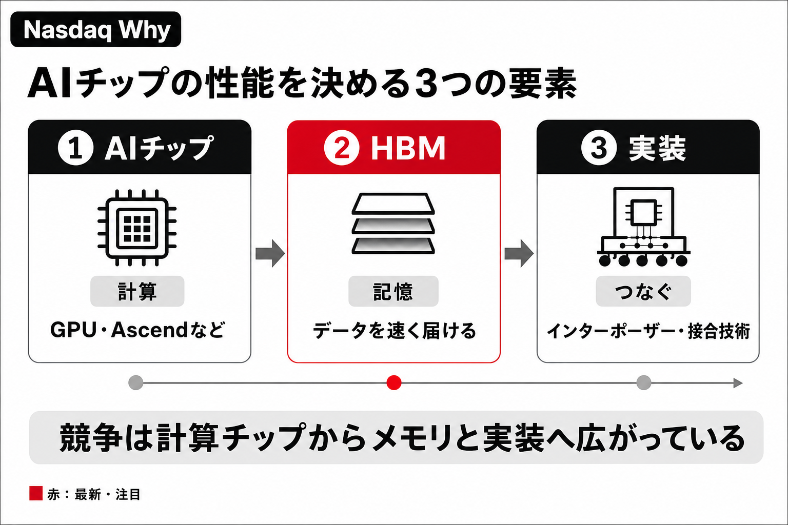
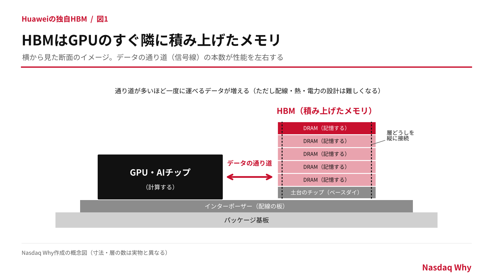
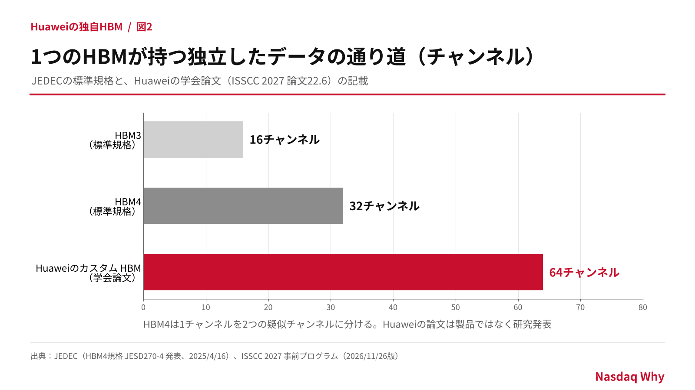
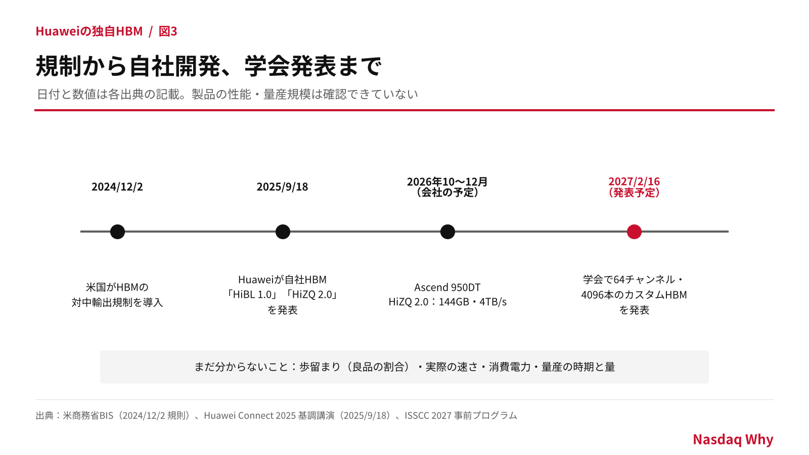

ニュースの深掘り
Huaweiの独自HBM、「4096本」の信号線は何を意味するのか？
AI半導体の性能は、計算するチップだけでは決まらない。計算に使うデータをどれだけ速く届けられるかを左右するのが、GPUのすぐ隣に置かれる積み上げ型のメモリ「HBM」だ。 中国のHuaweiは、2027年2月の国際学会で「64チャンネル・4096本」の信号線を持つ独自のHBMを発表する予定だと分かった。米国の輸出規制で海外製の先端HBMを買いにくくなるなか、この数字は何を意味し、何がまだ分からないのか。一次資料で確認できる事実と、推測を分けて整理する。

1．そもそもHBMとは何か
HBM（High Bandwidth Memory、広帯域メモリ）は、記憶用のチップ（DRAM）を縦に何枚も積み上げ、AIチップのすぐ隣に置くメモリだ。パソコンのメモリのように基板の離れた場所に置くのではなく、配線の板（インターポーザー）の上でAIチップと並べることで、データの通り道を短く、太くしている。
AIの学習や推論では、巨大なモデルの数値を休みなく読み書きする。計算するチップがいくら速くても、データの到着が遅れれば待ち時間が生まれる。このため、HBMの性能と調達量は、AI半導体の競争力そのものに直結している。

たとえるなら、HBMは「倉庫（メモリ）と工場（AIチップ）を隣に建て、間に何千本もの搬入口を開けたもの」だ。ただし実際の構造では、層どうしは微細な縦の配線や接合でつながっており、たとえはあくまで役割のイメージである。
2．学会資料で確認できる事実
半導体回路の分野で権威のある国際学会ISSCCは、2027年2月14〜18日に米サンフランシスコで開かれる。2026年11月26日付の事前プログラムによると、2月16日午後の第22セッション「SRAM、HBM、DRAM」で、Huaweiが論文22.6を発表する。
論文の題名は「A 64-Channel 4096-DQ Custom HBM with Memory Controllers and 5-Layer Wafer-on-Wafer Hybrid Bonding」。日本語にすると、64チャンネル・4096本のデータ信号線（DQ）を持ち、メモリの制御回路を組み込み、5層をウエハーのまま貼り合わせる「ハイブリッド接合」で作ったカスタムHBM、という意味になる。

比べる物差しとして、業界の標準化団体JEDECが2025年4月に発表したHBM4の規格を見ると、データ信号線は2048本、独立したチャンネルは32で、前の世代のHBM3の16から倍に増えた。Huaweiの論文の4096本・64チャンネルは、数字の上ではHBM4規格のさらに2倍にあたる。
| 項目 | HBM4（JEDEC規格） | Huaweiのカスタム HBM（論文） |
|---|---|---|
| データ信号線 | 2048本 | 4096本 |
| 独立したチャンネル | 32 | 64 |
| 1本あたりの速さ | 最大8Gb/s | 事前プログラムに記載なし |
| 位置づけ | 業界の標準規格 | 研究発表（製品の発表ではない） |
同じセッションでは、Samsung電子が48GBのHBM4E（1本あたり毎秒17ギガビット）を、中国のメモリ大手CXMT（長鑫存儲技術）が、同じくハイブリッド接合を使ったDDR5メモリを発表する予定だ。HBMの「次の作り方」をめぐる競争が、学会の場でも並んで示される形になる。
3．4096本が意味すること、まだ分からないこと
メモリが一度に運べるデータの量（帯域）は、おおまかに「信号線の本数×1本あたりの速さ」で決まる。信号線を倍にすれば、同じ速さでも理論上の帯域は倍になる。1本ずつの速さを無理に上げるより、本数を増やすほうが、消費電力を抑えやすい場合もある。
一方で、本数を増やすほど、配線を引き回す板の面積、接合の精度、熱の逃がし方、電力の設計は難しくなる。Huaweiの論文が「ハイブリッド接合」や「制御回路の組み込み」をうたうのは、この難しさへの答えを示す狙いとみられるが、具体的な方法は発表を待つ必要がある。
重要なのは、事前プログラムには1本あたりの速さ、容量、消費電力、歩留まり（良品の割合）が書かれていない点だ。4096本という数字だけでは、実際の性能が既存のHBMを上回るかどうかは判断できない。また、学会での研究発表は、量産や出荷の開始を意味しない。
4．なぜHuaweiはHBMを自前で作るのか
背景にあるのが米国の輸出規制だ。米商務省産業安全保障局（BIS）は2024年12月2日に発効した規則で、一定の性能を超えるHBMを規制対象に加え、中国向けの輸出を国全体で制限した。先端HBMの主な供給元は韓国のSK hynix・Samsung電子と米国のMicron Technologyで、中国企業は先端品を海外から調達しにくくなった。
Huaweiは2025年9月18日の自社イベント「Huawei Connect 2025」で、AIチップ「Ascend 950」向けに、2種類の独自HBM「HiBL 1.0」と「HiZQ 2.0」を用意すると発表した。HiBL 1.0は「HBM3EやHBM4Eより費用対効果が高い低コスト品」と説明され、Ascend 950PR（2026年1〜3月に提供予定）に使う。HiZQ 2.0は容量144GB、帯域は毎秒4TBで、学習向けのAscend 950DT（2026年10〜12月に提供予定）に使うとしている。

今回の学会論文が、これらの製品とどう関係するのかは、事前プログラムからは分からない。報道では、HiBL 1.0を載せた製品の発表も伝えられているが、Huaweiは独自HBMの製造方法や製造委託先を明らかにしていない。
5．Nasdaq Whyの視点：投資家が確かめたいこと
今回の発表は、AI半導体の競争が「計算チップ」から「メモリと実装（チップのつなぎ方）」に広がっていることを示す。米国株の投資家にとっては、次の点を分けて見ることが大切だ。
- HBM大手（SK hynix・Samsung電子・Micron）：中国向けの先端HBMはすでに規制で制限されており、Huaweiの研究発表だけで足元の業績が変わるわけではない。量産の実績と顧客の採用が出てから評価したい。
- 製造装置：ハイブリッド接合は、HBMの次の世代で使われる候補の技術とされる。どの装置メーカーの機械が中国で使われるかは、規制の対象とも関わるため、各社の開示を確認したい。
- 中国の自前化の速さ：歩留まり、実際の速さ、消費電力、量産の時期と量が、2月の発表と今後の製品でどこまで示されるかが焦点になる。
4096本という数字は目を引くが、性能の決め手は信号線の本数だけではない。数字の大きさではなく、量産できるかどうかを追っていきたい。
次回：先端パッケージング特集（CoWoS・ABF基板など）で、AIチップを「つなぐ技術」を図解します
本記事は公開情報に基づく産業・技術動向の分析であり、特定の金融商品の購入・売却を推奨するものではありません。
出典
- ISSCC 2027 事前プログラム（2026年11月26日版）セッション22・論文22.6
- JEDEC：HBM4規格 JESD270-4 の発表（2025年4月16日）
- Huawei：Huawei Connect 2025 基調講演（2025年9月18日）
- 米連邦官報：BIS 先端計算・半導体製造装置とHBMの規則（2024年12月5日公示、12月2日発効）